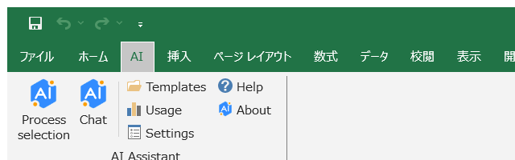
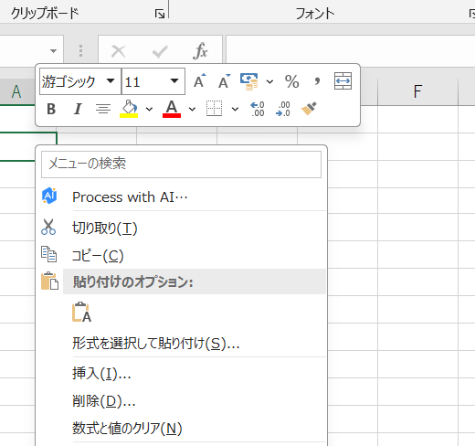
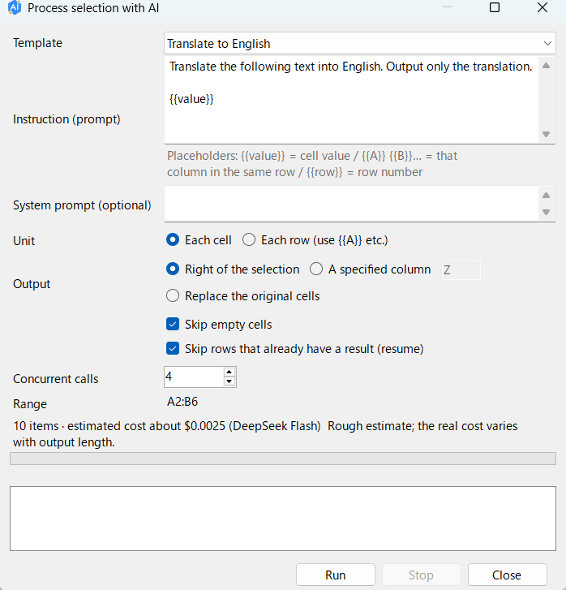
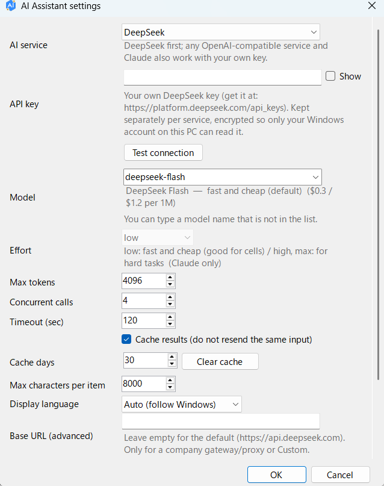
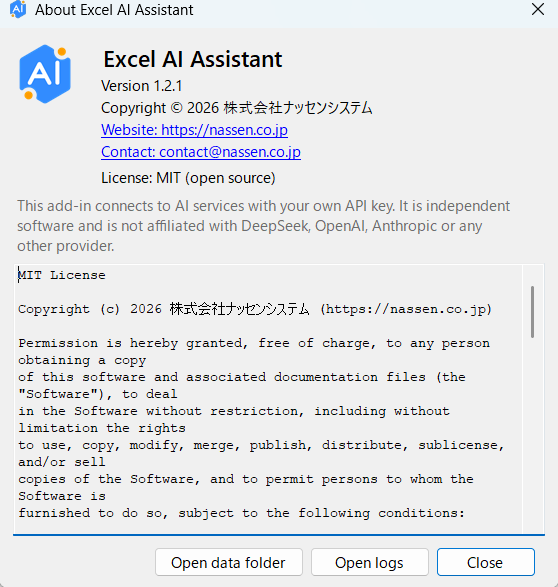

AI, right inside Excel.
Use DeepSeek — or OpenAI, Claude and other services — with =AI() formulas, one-click batch processing and a chat pane. Bring your own API key.
Download for WindowsHow to install
Everything you need to put AI to work on a spreadsheet
Built for everyday office work: translate, summarize, classify and clean up hundreds of rows without leaving Excel.
=AI() formulas
AI, AI_TRANSLATE, AI_SUMMARIZE, AI_CLASSIFY and AI_EXTRACT work like normal functions. Results arrive in the background, so Excel never freezes, and identical inputs are cached.
Process a selection
Pick cells, write one prompt with {{value}}, {{A}} or {{row}}, and run. See the item count and estimated cost first, write results to the right, a column or in place, and resume after a failure.
Chat pane
Ask questions beside your sheet with streaming answers. Attach the selected cells, then insert the answer back into the sheet.
Right-click menu
“Process with AI…” is right in the cell menu — select, right-click, done.
Many AI services
DeepSeek by default. Switch to OpenAI, Claude, Qwen, Moonshot, Zhipu, SiliconFlow, OpenRouter, or any OpenAI-compatible URL. Type any model name.
Your key, your data
Each user enters their own API key, stored encrypted for that Windows account. Cells are sent only to the service you choose — there is no server of ours in between.
Cost under control
Result cache, concurrency limit, automatic retry with back-off, and a monthly usage and cost estimate.
日本語 · 中文 · English
The interface follows Excel's language automatically (English for anything else) and can be changed in Settings.
Screenshots
The interface in the language you are viewing.




Get started in 3 steps
No administrator rights needed.
- Download and unzip
Unzip the folder somewhere local. If Windows blocks it, tick “Unblock” in the zip's properties before unzipping. - Run Install.cmd
Close Excel, then double-click Install.cmd. It detects 32/64-bit Excel for you. - Enter your API key
Open Excel → AI tab → Settings, choose the service (DeepSeek by default), paste your key and press “Test connection”.
Download for Windows
ExcelAI-{{VERSION}}.zip · SHA-256: {{SHA256}}
Try it
=AI("Translate to English:", A2)
=AI_TRANSLATE(A2, "French")
=AI_SUMMARIZE(A2)
=AI_CLASSIFY(A2, "inquiry,complaint,other")
=AI_EXTRACT(A2, "phone number")
Works with the service you already use
API usage is billed by the service you choose, to your own account. The add-in itself is free.
Support this project
Excel AI Assistant is free and open source. If it saves you time, you can support its development with a voluntary contribution.
WeChat Pay
Contributions are voluntary, do not unlock any feature and are not a purchase. Questions: contact@nassen.co.jp
FAQ
Is it really free?
Yes. The add-in is open source under the MIT license. You only pay the AI service for the API calls you make, using your own key.
Where does my data go?
The text of the cells you process and your instructions are sent directly from your PC to the AI service you selected, with your own API key. We run no server and never see your data or your key. The add-in asks for your consent the first time. Do not process confidential or personal data unless your organization allows it.
Which Excel versions are supported?
Excel 2019, 2021 and Microsoft 365 desktop on Windows 10/11, 32-bit and 64-bit builds are included. Excel for Mac and Excel on the web are not supported at this time.
Is it affiliated with DeepSeek, OpenAI or Anthropic?
No. It is independent software that connects to those services through their public APIs. All product names are trademarks of their respective owners.
I don't see the AI tab after installing.
Close every Excel window and open Excel again. If the file was downloaded, unblock the zip (Properties → Unblock) and run Install.cmd again. Logs are in %APPDATA%\ExcelAi\logs (they never contain your key or cell contents).
Can I change the interface language?
It follows Excel's language automatically (Japanese, Chinese, English; English for other languages). You can choose a language in Settings, and restart Excel for the ribbon to update.